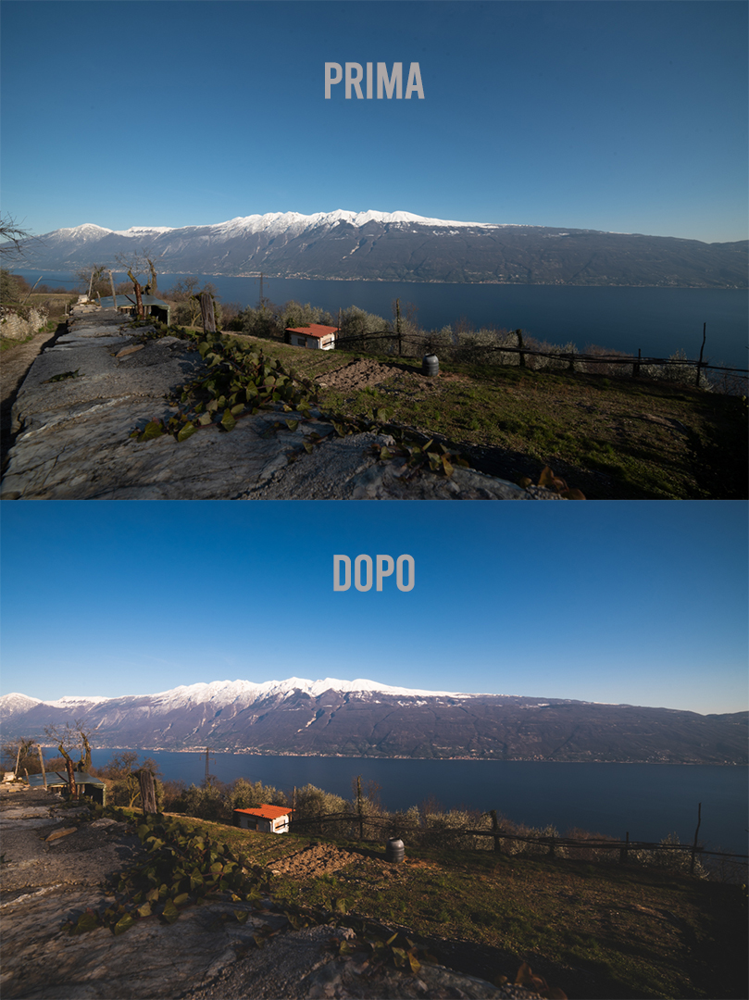

Ecco i vari step:
Divisione nei vari gruppi
Durante questa fase iniziale, abbiamo fatto compilare a tutti i partecipanti un modulo per capire meglio quanto già sapesse di informatica ognuno di loro, in modo da poterli smistare in modo omogeneo.
Primo incontro
Appena dopo la divisione nei vari gruppi, abbiamo presentato agli anziani il programma di formazione digitale, spiegando loro l’obiettivo e i dettagli del progetto. Ognuno di noi studenti ha avuto il compito di affiancare due persone durante le lezioni, offrendo supporto e guidandole passo dopo passo. È stato un modo per creare un legame più personale e assicurare che ogni partecipante fosse seguito con attenzione e cura.

Le lezioni seguenti
Durante le seguenti lezioni, in accordo con le due signore che stavo seguendo, ci siamo occupati soprattutto di pre e post produzione fotografico dato che era la cosa che più interessava ad entrambe
Prove pratiche
Nelle ultime lezioni ci siamo occupati sopratutto di "testare" tutte le nuove cose imparate nel concreto.
Analizzando i modelli e le fotocamere degli smartphone delle due signore siamo riusciti a provare tutte le impostazioni e funzionalità di pre/post produzione.
Opinione personale
Ho trovato questo progetto molto interessante dato che inizialmente ero un po' timoroso del fatto di dover gestire "da solo" queste lezioni, ma vedendo la soddisfazione delle signore alla quale nel mio piccolo sono riuscito ad insegnare qualcosa, ogni tipo di paura ed insicurezza è sparito rendendo questa esperienza unica